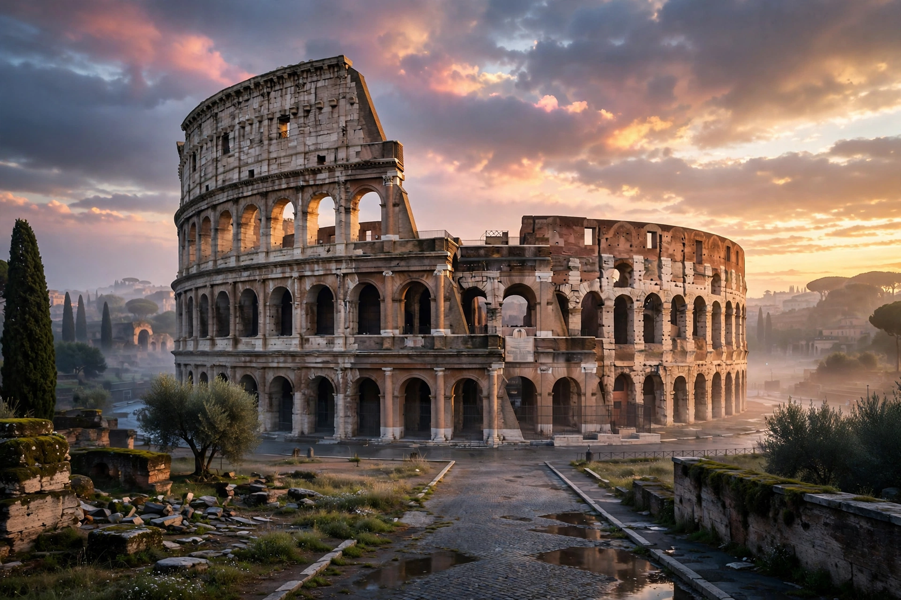

From Wikipedia, the free encyclopedia
| Ancient Rome | |
|---|---|
 | |
| Period | 753 BC – AD 476 (West); to 1453 (East/Byzantine) |
| Capital | Rome (later also Constantinople) |
| Language | Latin; Greek in the East |
| Eras | Kingdom (753–509 BC), Republic (509–27 BC), Empire (27 BC–AD 476) |
Ancient Rome is the period of Roman civilisation from the founding of the Italian city of Rome in the 8th century BC to the collapse of the Western Roman Empire in the 5th century AD. It encompasses the Roman Kingdom, the Roman Republic, and the Roman Empire, which at its height under Trajan in AD 117 governed some five million square kilometres around the Mediterranean and a population of perhaps 70 million.
According to legend, Rome was founded in 753 BC by Romulus. The monarchy was overthrown in 509 BC and replaced by a republic governed by elected magistrates and a Senate. Through the Punic Wars against Carthage and wars in the Hellenistic east, the Republic came to dominate the Mediterranean, but was destabilised by civil wars in the 1st century BC. Octavian's victory and the Senate's grant of the title Augustus in 27 BC mark the transition to Empire.
The Empire's first two centuries (the Pax Romana) saw prosperity, monumental building, and administrative consolidation. Crisis in the 3rd century was followed by Diocletian's reforms and division of the Empire; Constantine Christianised and founded Constantinople. The Western Empire fell in AD 476, while the Eastern (Byzantine) Empire endured until 1453.
Roman law, engineering (roads, aqueducts, concrete), the Latin language and its Romance descendants, the Julian and Gregorian calendars, and republican political concepts profoundly shaped Europe and the world. Roman citizenship, extended empire-wide in AD 212, and a professional army underpinned the state's longevity.
Categories: Ancient Rome | Classical antiquity | Roman history